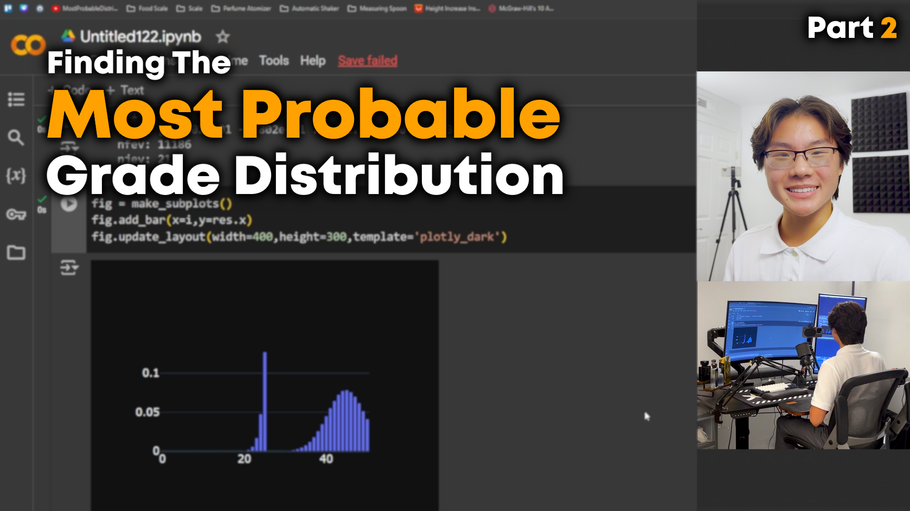

Finding the Most Probable
Distribution Part 2

Distribution Part 2
In Part 1 of this video series on calculating the most probable grade histogram,
I derived an objective function proportional to the Shannon entropy of the distribution
that can be maximized to find the most probable distribution. Now Part 2, goes through the Python
coding implementation to solve the constrained maximization problem numerically.
Specifically, we solve for the most probable grade histogram for a 50 point test knowing
the average grade (40), standard deviation (8.5), and that 20% of the class scored 25 or below.